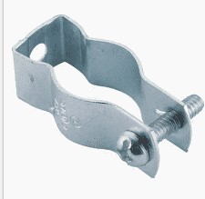

### Week 10: Thinking about the Hinge Designs
### Monday - 11/14:
Wasn't in class because of an exam
### Wednesday - 11/16:
We fleshed out the design for the azimuthal rotating threaded rod and we discussed the type of hinges
we would be using. When discussing the types of hinges we would be using, we talked about how we would fasten
the bottom motor to one part of a hinge at its base, allowing it to rotate freely and change angles as the rod extends.
In addition, we discussed how we could potentially use a "rib", or the piece of metal sticking out between two triangular
sections of the disk to fasten our hinge onto. This hinge could be made out of a steel conduit and pipe hanger that
looks like the following:

The screw hole where the fastening screw is fed through can serve as a hinge, allowing the pipe to be fastened and rotate.
On the other side, the ledge around the reflector tube where we will support the pivots can also be a ledge
to fasten our motor hinge.